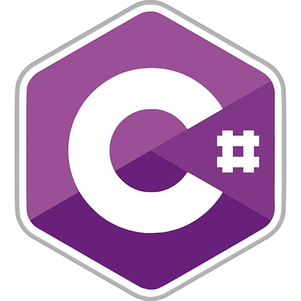

Yo soy un chico de Arjona,(Jaén). Actualmente estoy estudiando en Granada el primer curso del grado superior de Desarrollo de Aplicaciones multiplataforma. Me gusta mucho hacer trabajo en equipo y me implico mucho en lo que hago.¡Nunca me doy por vencido!
"Creo firmemente que casi todo es cuestión de actitud. No se trata de lo que ocurre, sino de como lo afrontas"
SOBRE MI
Mi instituto
De donde vengo
Mis Especialidades
En este primer curso de DAM he aprendido varias cosas como programar en Java, HTML5 y CSS3,SQL,C# y algunos lenguajes más y por ello voy a mostrar el resultado de diversos proyectos realizados por mi
Este es un proyecto en que recreé el juego Flappy, este proyecto está realizado con C#

Este proyecto trata sobre la creación de una página web de una tienda de fertilizantes agrícolas, este proyecto está hecho con HTML5 Y CSS3